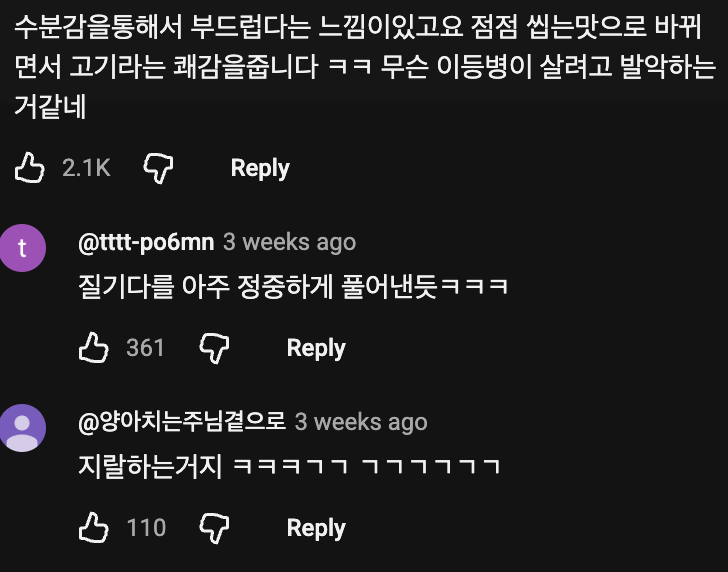

저렇게 하면 안 됨??
3등급은 저렇게 구워먹는 용도가 아니고
보통 결도 직각방향으로 끊어주는 형태로 썰지
쇠고기는 얇게 저미면 모든것이 다 해결됨
고기를 결대로 썰면 근섬유가 그 결대로 길게 있어서 씹을때 질겨 ㅋ 그래서 결 반대로 썰어서 끊는거임 ㅋ
결반대로가 아니라 수직인데 결반대로라는건 진짜 누가 쓰기 시작했는지 몰라도 혀뽑아야함
360도 돌려썰기 vs 결 반대로 썰기
결 반대로면 결대로랑 똑같은거 아니냐?
그래서 수직이라고 하잖아.
비스듬히를 대각선으로라고 하는 사람도 무지 많은데, 그 정도 가지고 뭘...
고기 씹는맛을 즐길땐 늑간도 그렇고 일부러 결 살려서 썰긴 하는데, 저 영상 안창은 그게 좀 과했나봐 ㅋㅋ
신선한 안창 레어로 먹으면 존맛이긴 함
안창살 결 살리면 특유의 질긴듯한 오독거리며 끊어지는 질감이 있음 난 개인적으뇨 굉장히 좋아함.
으뇨뇻
그 이름기억안나는디 스지약간 낀 냉채먹는 소고기부위 씹는 그거 말하는건가??
그느낌이맞다면 또 별미긴함.
무슨 말인지 알아서
난 좋아함
근데 본인들 보다 요리 더 잘하고 잘아는 사람이 알려주는데 지랄이라는거임?
화면의 세사람 다임 ㅋ
고기만 먹을거면 살짝 질긴정도가 좋고
반찬으로 밥이랑 먹을거면 밥이랑 같이 넘어가게 최대한 부드러운게 좋음
맞다 아니다의 문제가 아니라 취향의 문제임
직접 해먹어 본것도 아니고 댓글로 진짜 염병을 떠네 ㅋㅋㅋ 고기를 구워 먹어봐도 지들보다 수십배 구워봤을텐데 ㅋㅋㅋ 좋다고 추천누르고 어우 역겨워
강레오도 질기냐고 물어보네. 근데 난 고기는 질기면 좀 그래..
우리나라에 강레오보다 잘아는 고수들이 존나 많네
쟤가 답이냐 걍 취향이 갈리는거지
자아의탁도 과하면 병임
강레오도 질기냐고 물어보는데
육식맨이 사회생활한다고 호들갑 떤 게 맞을수도 있는 거임 ㅋㅋ
본인도 어떠냐고 물어보잖냐
너처럼 얘기하는게 예전에 전국적으로 백종원 찬양할때랑 비슷함
서울대 교수가 비만은 자의로 살빼기 힘들다고 아무리 아무리 얘기해도 과학이랑 기싸움 하는 애들 천지인데 요리사가 뭐라한들 제대로 처 듣기나 하겠음?ㅋㅋㅋㅋㅋ
맛이 없었으면 저 영상이 안올라왔겠지
본인채널인데 왜 안올림
맛없다는거 올려서 뭐하게
본인이 좋아하는거라잖아 혹시 제목 못읽어?
본인이 좋아해도 다른사람 반응이 안좋으면 올리겠냐는 얘긴데 그렇게까지 까내릴 일이야?
남시선이 그렇게 중요해? 그냥 내가 좋다는 고기부위 구워먹는건데 못올릴게뭐야 자부심을 좀 가져
요리 하는 양반인데 존나 중요한거 아님?
저게 파는거임? 내가 먹고 맛있는거라는데? 주제파악이 안되나보넹
됐다 말을 말자 니가 옳다
옆동네에 일부러 1이나 1+ 쓰는 한우집 있는데 육향 좆됨 여긴 물량 떨어지면 1++가 나옴
그냥 본인이 좋아하는 상태 맛으로 구워준거아님?
강레오 본인도 질긴가요라고하는거보면 누군가에겐 질길수도있다는걸 아는거아님?
늑간살 껍데기 붙은거 제거하고 먹으라고 하던데 그냥 구워 먹으면 쫄깃하고 육향 나서 맛있던데. 그런 느낌일라나.
안창살 특유의 맛을 말로 잘 풀어낸거 같은데. 안창살 레어로 잘 구워먹으면 딱 저맛남. 처음에 부드럽게 씹히다 점점 쫀득해지는
고기라는 쾌감을 준대 ㅋㅋㅋㅋㅋㅋㅋㅋㅋㅋㅋㅋㅋㅋㅋ 아 얼탱이없어서 개웃기네
걍 사람 입 맛이 다 다른거임.
라면만 봐도 진순 이거 극과극의 반응이잖아
결국 맛에 답은 없다고 생각함.
유튜브 댓글은 보면 안됨
나도 고기좀 먹어본 사람인데 안창도 안창인데 치마살을 2쁠 1쁠 먹으면 치마살 특유의 고기의 결/씹는맛이 안느껴지고 너무 부드러워서 오히려 치마살을 먹는 이유가 없어짐. 치마살은 무조건 1등급.
닭도 존나 질긴 폐닭 좋아하는 사람 있는데
취향 차이겠지 뭐
강레오가 예전에 호박으로 프랑스식 죽인가 끓였는데 스텝들이 다 별로라고해서 ㅈㄴ 긁힌적 있음.
웬만해선 다 맛있긴 하겠지만 너무 자아의탁하지마셈 ㅋㅋ
꼴같잖네들 ㅋㅋ